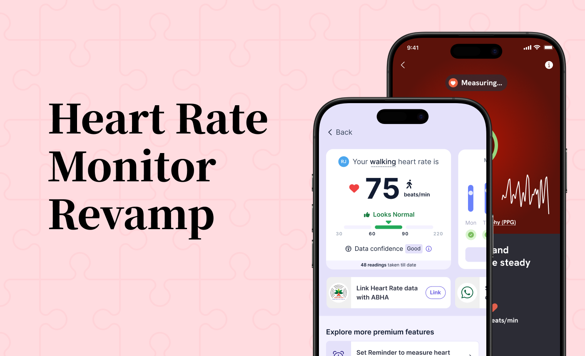

Architecting an Engagement Engine
See how I transformed a failing feature into a core driver of user retention and business value.
Explore the Heart Rate Project →How I used rapid research and principle-led design to transform API chaos into a clear, trustworthy experience that facilitated millions of vaccinations.
In 2021, at the peak of India's COVID-19 crisis, Eka.Care integrated the government's Co-WIN APIs. The mandate was extreme: deliver a public-facing solution in days. The user's reality was one of panic and low trust due to overwhelmed government portals.
My role as lead designer was to deconstruct the API's technical chaos and the public's anxiety into a clear, actionable design plan. There was zero room for error.
With no time for formal studies, I conducted rapid secondary research and heuristic evaluations. I analyzed existing third-party solutions and the official government portal, noting points of friction and user confusion. This scrappy-but-essential research was framed into a set of core user stories that captured the user's high-anxiety mindset.
This rapid research led to one core insight: In a crisis, clarity is the ultimate feature. Every design decision had to actively fight ambiguity and reduce anxiety. I established three design pillars to guide our execution, each derived directly from our user stories:
Addresses: "I want to see proof this app is legitimate and comprehensive."
Action: Show everything from the API, even centers with zero slots. This proves the system is comprehensive, not broken or hiding information, building foundational trust.
Addresses: "I want to know if the information is up-to-date."
Action: Use clear, honest timestamps ("Last updated 5 mins ago") instead of promising a "real-time" view we couldn't technically deliver. This prevents the frustration of chasing ghost slots.
Addresses: "I want to find a slot... so that I can feel we are safe."
Action: Ensure the final confirmation screen is a "contract of trust," containing every piece of information needed for a successful, anxiety-free appointment, leaving no room for doubt.
The final confirmation screen was designed to be the ultimate source of truth, providing all necessary details to eliminate day-of-appointment anxiety.

Our principle-led approach was a monumental success. By focusing relentlessly on user anxiety, we built the most trusted and widely-used vaccination booking tool in the country after the official portal.
#1
in Health & Fitness
1.4L+
Certificates / Day
~8K
Daily at peak
2 Cr+
Vaccine Certificates
This project was a trial by fire in crisis-driven UX. It solidified my ability to lead through influence, using design artifacts to align teams and de-risk projects under immense pressure. The success became the bedrock of Eka.Care's credibility and the foundation for our future health management platform.